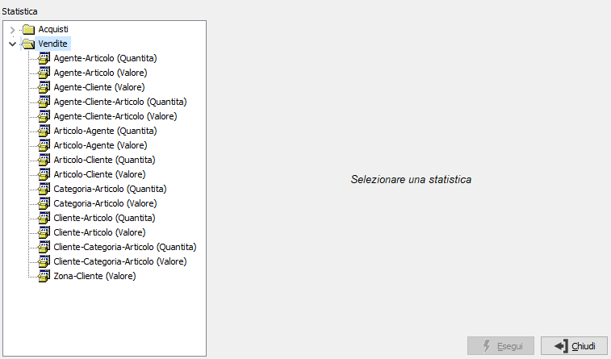

Stampa statistiche
Il programma realizza la stampa delle statistiche; al momento in cui si accede viene presentato l’elenco delle statistiche presenti per l’applicazione da esplorare (in modo similare all’Esplora Risorse); trovata la statistica di proprio interesse è possibile inserire i limiti di selezione relativi alla statistica scelta e generare il report. In ogni statistica è possibile decidere se stampare le informazioni relative ai totali sotto forma di grafico. Sono predefiniti tre tipi di grafico: due grafici a linee sull'andamento generale e mensile dei valori nel tempo ed un grafico a barre orizzontali sulla composizione dei periodi che rappresenta l'incidenza dei mesi in percentuale sul totale del periodo. I grafici possono essere stampati a tre oppure a due dimensioni.
